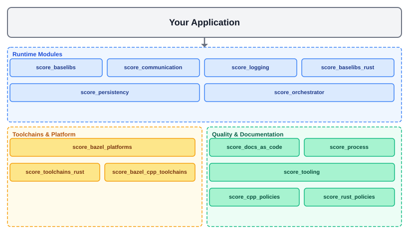
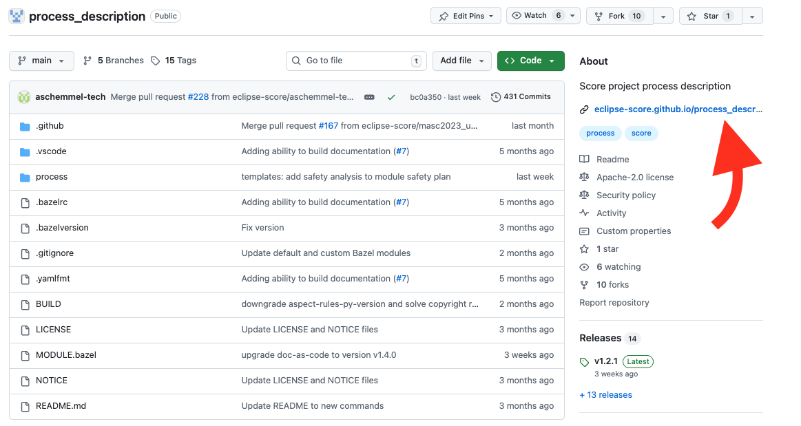
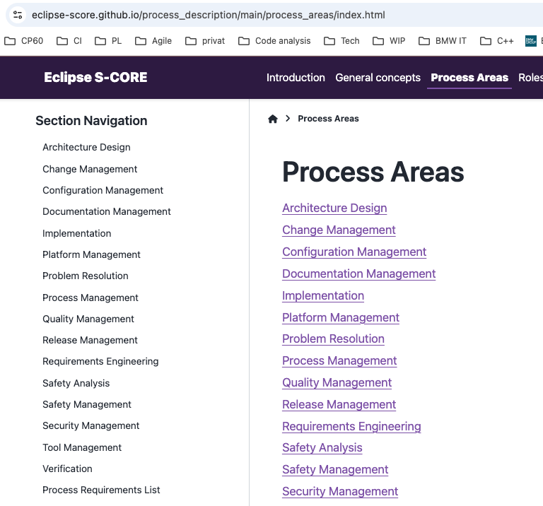

Module Structure Overview#
As described in the Technology Overview chapter, Eclipse S-CORE consists of multiple bazel modules, typically stored in separate repositories. Most modules reside in the Eclipse S-CORE GitHub organization, while some originate from other Eclipse projects and are reused here. This chapter introduces the most important bazel modules and repositories in Eclipse S-CORE GitHub organization.

Eclipse S-CORE Platform#
Repository: eclipse-score/score
This is the central repository of the project. It contains:
stakeholder requirements
Assumptions of Use (AoUs) for potential users
the list of platform features
the high-level architecture
the decomposition of the architecture into modules
the definition of logical interfaces and module functionality
Process Description#
Repository: eclipse-score/process_description
Hint
We automatically generate for every repository html documentation from rst files. You can easily open it as shown at the picture below.
{kind=link}

The process repository describes the Eclipse S-CORE software development process. It describes:
the general concepts and principles of the Eclipse S-CORE software development process
all process areas in detail
how work products such as requirements and architecture must be specified
PMP describes, how the processes are deployed within S-CORE Project Management Plan
{kind=link}

Doc-as-Code#
Repository: eclipse-score/docs-as-code
Doc-as-code repository provides the tooling around sphinx and sphinx-needs framework, including:
traceability between requirements, architecture, and tests
linking process artefacts
checks that validate the Eclipse S-CORE metamodel, as defined in the process description
The implementation status of tooling requirements is available in the Tool Requirements Overview.
Tooling#
Repository: eclipse-score/tooling
Tooling repository collects all supporting tools for the Eclipse S-CORE project, e.g., format checkers.
Development Environment#
Repository: eclipse-score/devcontainer
Provides a common Dev Container for Eclipse S-CORE development. Using the devcontainer is the recommended way to set up a fully configured development environment with all required tools, compilers, and VS Code extensions pre-installed.
Clone the devcontainer repository and open it in VS Code with the Dev Containers extension to get started in minutes.
Code Quality Policies#
Repositories:
These repositories provide centralised, version-controlled quality tool configurations:
score_cpp_policies: clang-tidy rules, sanitiser configurations, and safety-critical C++ guidelines.
score_rust_policies: Clippy linting rules and Rustfmt formatting configuration for Rust modules.
All modules are expected to depend on the appropriate policy package and cannot override the shared rules without project-lead approval.
Toolchains and bazel platform#
Repositories:
The score_bazel_cpp_toolchains repository provides GCC-based C++ toolchains for all supported
targets, including Linux host builds (GCC 12.2.0) and QNX SDP 8.0.0 cross-compilation, replacing
the former separate toolchains_gcc and toolchains_qnx modules.
The score_toolchains_rust repository provides pre-built
Ferrocene toolchains for Rust, covering both Linux
host and QNX cross-compilation targets.
The score_bazel_platforms repository defines the platforms supported by Eclipse S-CORE
(e.g., x86_64-qnx-sdp_8.0.0-posix), as shown in the following
BUILD file.
CI/CD Automation#
Repositories:
These repositories provide reusable GitHub Actions workflows and composite actions used across all Eclipse S-CORE module repositories. Module teams reference these shared workflows instead of duplicating CI/CD logic, ensuring consistent quality gates and pipeline behaviour.
Bazel Registry#
Repository: eclipse-score/bazel_registry
Bazel registry is essential for publishing official releases of all Eclipse S-CORE bazel modules. It enables consistent and reliable module referencing across the entire project.
Software Modules#
Repository (example — baselibs): eclipse-score/baselibs
Each software module is a bazel module stored in its own repository. Software modules typically include:
component requirements and architecture
detailed design
implementation
unit- and component tests
documentation
Modules usually depend on other modules in the Eclipse S-CORE GitHub organization, especially on
eclipse-score/score to reference feature requirements and architecture in the component requirements and architecture
eclipse-score/docs-as-code for the sphinx/sphinx-needs framework and tooling around it
toolchains modules for the compiler toolchains.
Reference Integration#
Repository: eclipse-score/reference_integration
This repository is a key part of the Eclipse S-CORE project. All Eclipse S-CORE modules are integrated together to ensure, that they match to each other. It integrates all software modules into reference images (e.g., a qnx x86 image) to verify that:
all module dependencies are consistent
modules work correctly together
feature requirements are fulfilled
Feature integration tests are executed on these reference images to validate the complete platform.
Integration Testing Framework#
Repository: eclipse-score/itf
The Integration Testing Framework (ITF) is the tool used to implement and execute Feature Integration Tests (FIT) on reference images. Module teams write FIT test cases using ITF to verify end-to-end feature behaviour across module boundaries. Documentation is available in the ITF README.
Testing Tools#
Repository: eclipse-score/testing_tools
Provides shared utilities and frameworks for Component Integration Tests (CIT). CIT tests verify the interaction between a module and its direct dependencies at the component level, without requiring a full reference image.